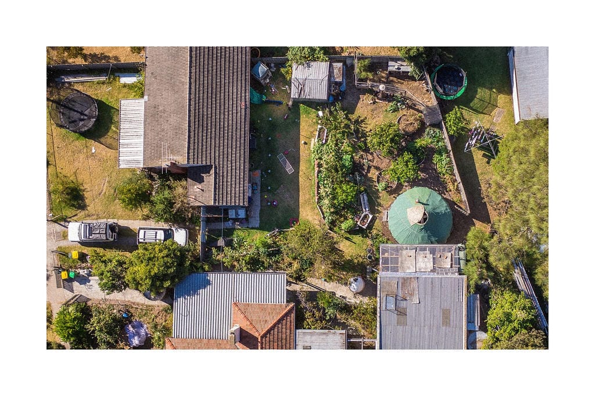
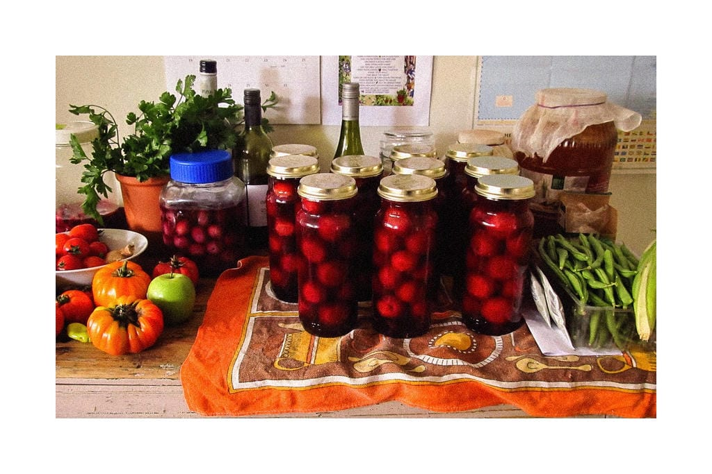
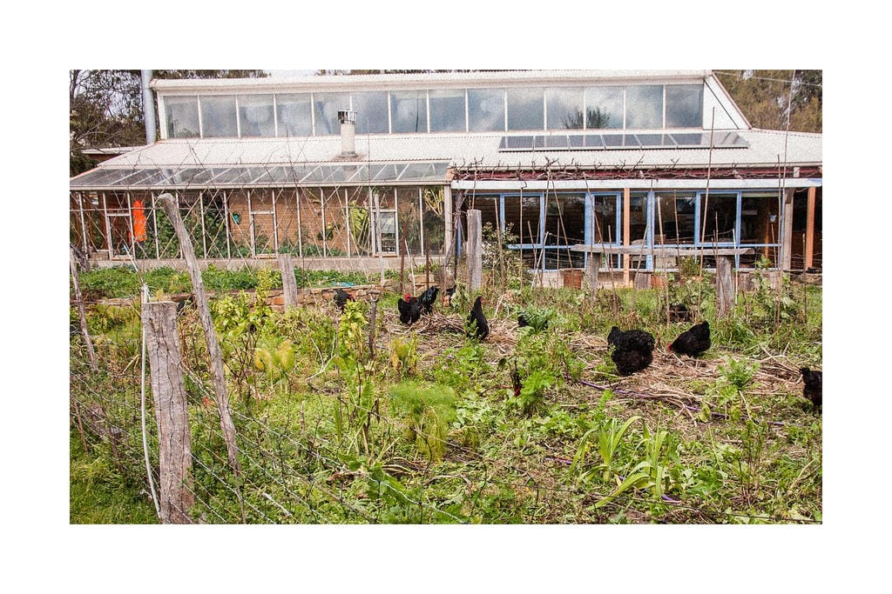

The latest episode of Partisan Gardens features a conversation with David Holmgren, author of the recent RetroSuburbia and co-author, with Bill Mollison, of Permaculture One--the landmark 1978 book which launched the international permaculture movement. In this wide-ranging and fascinating discussion, Holmgren calls for a bold and improvisational approach to the problem of the suburbs. Rejecting a mythical blank-slate, he invites us to see the rich possibilities in retrofitting suburban space, opening it up to distributed, small-scale food production and new autonomous forms of life.
Thanks to Partisan Gardens for generously sharing the transcript with us for publication. The full episode can be heard here. A pay-what-you-can version of Retrosuburbia: The Downshifters Guide to a Resilient Future is available at retrosuburbia.com.

What brought you to focus on suburbia in this moment?
I've lived in rural Australia for over 35 years. In moving from the city to the country, we chose to move into a suburban street and had the intention of buying a house to retrofit. But we couldn't get anything that met all of our different criteria.
Over those years, I was seeing the looming crisis that most people today would associate with the climate emergency, but is more correctly understood in terms of the "Limits to Growth" crisis. Permaculture was really framed around that crisis for civilization and the sense that we would be, within that crisis, having to retrofit and adapt housing stock, gardens, productive environments, and our own behavior very rapidly. Certainly not with the time to build new ecological cities or knock down all our buildings and start from scratch.
This process of working from what we've got was also informed by my work as a permaculture designer in Northern Australia and my discontent with the notions of "blank slate" design--where you have a field and say We're going to put a house here and gardens and orchards there. There isn't such a thing as a blank slate: everywhere comes with a history. The idea of starting from scratch is actually an illusion.
Another factor was the increasing regulatory stranglehold on doing anything new, innovative, or small-scale. At the same time that the corporate world seemed to be running amok with more and more laissez-faire opportunities, at the small scale the individual and small business were being more and more tightly constrained. My experience as a developer of an ecovillage, as an owner-builder, and as a consultant made me realize that there were a lot of opportunities to retrofit under the radar of regulatory control. That's often possible, especially if people have the social license from those around them, rather than the legal license. Whereas with new buildings and starting from scratch, the requirements were becoming more and more onerous.
So there were a lot of strategic factors that led to the focus on suburbia and on retrofitting, extending the paradigm of retrofitting from where it's commonly understood as the built environment through to the biological and to the behavioral.
`Retrofitting' seems really important for rebuilding our relationship with the world. We talk a lot about the `hacker ethos,' which is the commitment to open up, understand, and repurpose technical systems. We usually mean computers or agricultural tools, but you're talking about hacking the entirety of suburbia. Can you talk about the systemic crises we're facing and what we can do in suburbia to address them?
It is not just that energy in the future will be expensive and not as available as it has been in the past. The globalization of the economy is a process that's only been possible with fossil fuel. So `re-localization' is the recognition that the energy sources of the future will be distributed across the landscape, not concentrated out of giant holes in the ground.
Not too many generations ago, perishable food was concentrated very close to those areas that supplied the food, and there were other patterns of lower-density residential development. People produced a lot of the perishable food in garden farming. That was part of the non-monetary economy. We've enabled continuous economic growth by sucking activity out of the household and community, out of the non-monetary economies that in all previous times were the base on which the monetary economy was built. The household and informal community relationships are inherently more energetically efficient, and arguably much more humane and better ways to provide a lot of those things. That means the downsizing of the monetary economy and moving some things back into the non-monetary economy. Lower-density residential structures are actually much more amenable to doing things at home.
We can think of the example of when people changed from taking their home-made lunch to work, versus buying their lunch at work. There's an increase in GDP as a result of that process, even though no more lunches were created. When we move that back into the household economy, the capacity of a household economy becomes a key issue. If we look at it in terms of the capacity of governments and corporations to deliver `just in time,' reliable supply through globalized trade networks, one can expect all of these things to be less reliable in a future where energy comes from more distributed sources. The proximate causes of that may be things like geopolitical instability and conflict between nation states.

I really admire your decision to focus RetroSuburbia on the Australian situation. Could you talk about that decision and what it means to start from your specific situation?
Re-localization is also the redevelopment of local culture and local context. Of course, people all over the world have been worried about the dissolution of their own local culture and the predominance of what often is labeled as `American culture'--I say it's either the shared global culture or it's no one's culture, it comes from Mars or something. It's very different from all cultures of place that existed before. Redevelopment of local culture is more likely to be some hybrid of past and new things, reflecting the local contexts. This is one of the difficulties people have coming from our shared modernity: they assume, because of what has been our experience for a few generations, that there's one big solution that spreads everywhere. But once you're working with nature, once you're working with living systems, everywhere is different. So the particular nature of solutions is different. People get very frustrated that they can't just take an example from one place and rubber stamp it out across the landscape.
That also applies in the publishing world. Publishers want generic books that will apply to the widest audience and actually manipulate authors to rewrite texts away from their lived experience as an author. This has always been a difficulty with permaculture because while its ethics and design principles are universal, the concrete strategies and techniques, unfortunately, are not universal. The same techniques don't apply everywhere.
Writing out of lived experience is a commitment to one's own territory, to providing the most valuable, immediately applicable information to a geographic community. If that information is useful in a wider field, that is good, but it biases deliberately to the local. At the same time, we don't want to get trapped in the parochial: The olive oil from my village is the best in the world!
In terms of trying to bridge that gap--to think from a territory, but to have something to say to people elsewhere--we've also played with speculative fiction. I want to ask you to talk about the role of `Aussie Street' in the book and in your writing process. What does it mean to use speculative fiction in this way to think about the transformations we'll need?
The street initially wasn't even a story. It was a map of a suburban street, showing how it had evolved over my lived experience starting in the 1950s and then how it might evolve in the future. Gradually that storytelling emerged with people's names and became a sort of permaculture soap opera. It's like the story ran away, like it was a whole reality. For me it was about educating younger people about recent Australian history, about the places where most Australians grew up. For so many decades, there was almost no academic work studying what Australians did in their suburban backyards, there were no books or significant academic research from 1975 to 2000. This is a great gap. So `Aussie Street' was my poking fun at academics, asking "What is the real history of this?" and also introducing this history to people who were migrants to Australia who landed here and found modern Australian culture so weird and so different from their own experience. It allowed me to show them that there are elements in the not-so-distant past that connected with some of their own experience from other countries.
In the Aussie Street stories, there was a real effort to wrangle with transformations and relations between genders, racial dynamics, and migration patterns. Suburbia here in the US is tied so tightly to questions of racial exclusion, and the home economic unit tends to be associated not just with a useful home, but an image of an exclusive home that doesn't do a very good job of caring for itself. Could you talk about some of the challenges specific to the suburban pattern and how we can address them?
A lot of those issues have to do with the socio-economic cycle. Is this a suburbia of new owners dependent on mortgages who are almost never there and have very little community connection? Is it where people are dying off or moving to nursing homes, and there's new generations of people coming in, along with development pressures being resisted by new families? There are so many different dynamics in suburbia, right up to the battles for places that are the abandoned landscapes where the industries that supported workers have left. Different types of suburban landscapes that all have this separate house on a block of land, that basic template with very different communities. A lot of the opportunities are in places where there has been some breakdown, loss of value, or transition in owners and land use. But often we associate suburbia with newly established affluent places with tight regulatory control, reinforced by social norms of maintaining property values and security. Those patterns can be more difficult.
There's the lens of looking at the community as a whole, which sometimes runs up against some limits. My RetroSuburbia work in some ways inverts that, taking what might be seen as a more socially conservative view, because it starts with the household as the autonomous unit from which community relationships and connections are built. This is part of what I see as an evolution in permaculture activism over the decades. The first generation of permaculture activism was mostly rugged individualists, often in a rural context. Then there was a second iteration, which was much more community focused. You can see this in the emergence of the Transition Towns movement around the world. But between those two poles, people often miss that all communities are based on the household as the functional unit of society, economically and socially--whether or not it's a family, it's people living together that share food and are some sort of economic unit.
If we look at it in terms of social change, sometimes that missing building block is the household. Especially politically, from a left progressive perspective, it's been seen as the territory of right-wing social conservatives. Maybe recognizing the household as a starting point is something that can get past some of those barriers. RetroSuburbia is primarily focused on the household, which bypasses some of the issues like, "How do we get all these people to cooperate?" or even to start doing things together. Obviously, there's enormous potentials that can be developed at the community and neighborhood level, which can easily be achieved at household level.

In the last third of the book you provide tools for thinking about the social and behavioral elements of retrofitting. What are some things you offer people facing climate chaos and intensifying crises? You discuss conflict resolution and group formation and, I think, offer some powerful tools.
My partner would say to start at the back of the book, that the behavioral field is the really important stuff. It deals with everything from ownership and living arrangements, new forms of livelihood, raising self-reliant children, financial planning and security, a sustaining and sustainable diet--all the big, difficult issues for which there's no real exact answers. How do we deal with conflict? We've shared lessons from intentional communities, group-process work and science, combined with some of the best of traditional relationship understandings and patterns. How do we deal with generational change and those sorts of issues?
Within what might be called Social Permaculture and kindred networks, especially the intentional communities movement, there has been a lot of work done on that. There are processes that are essential when we're dealing with larger groups and communities, that also have some application down at the household level, sometimes with an outside elder or facilitator. Historically that sometimes happened in extended families. One of the greatest challenges we're dealing with, which we illustrate in the Aussie Street story, is the interaction between older homeowners who often own their places outright without debt, but really need younger people to help them achieve its potential. At the same time, there are younger people who are not in a position to own their properties. How do these two groups get together? Because they both need each other. And both groups need to learn to give up some things they're holding onto.
For older people, it's sometimes their privacy or their sense of control of the territory, and also to come face to face with the ambiguity of their power difference as an owner with renters. Are they comfortable with those intimate relationships where they actually have more power than the other person? And how do those renters, often younger people, come to grips with getting beyond the attitude that says, "I don't have the power, this is not my place, I can't really do anything that I need to do until I have my own autonomy"? Huge synergies and potentials are possible when both of those groups learn to give up something.
We also know, when we're talking about extended families, that there's a lot of triggers for going back to old patterns. Sometimes when there is a connection between older people and younger adults who are not related, you don't have those old patterns that have to be overcome. We don't have answers on those questions, but guidance on some of the issues. We're hoping to continue with all of the sections of the book, adding more resources to the RetroSuburbia website, just as we're adding more inspirational case studies so people can have a flavor of how other people are working through similar problems.
All images courtesy Retrosuburbia.com.